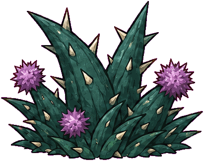
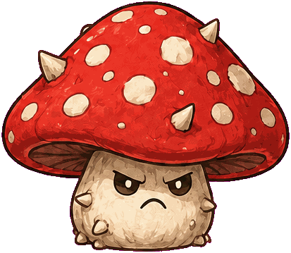
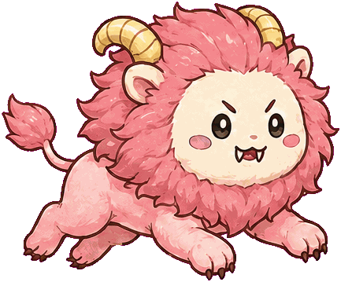

本文所有参数与机制均已按实际代码逐条核对
（js/config.js、js/world.js、js/game.js、js/raster.js）。
与最初设计意图不一致的地方，文中直接写明实现是什么、当初设想的是什么、差异带来了什么——
这些差异本身是这份文档里信息量最高的部分。
01定位与 scope 边界
目标不是做一款完整的商业游戏，而是用一个可玩版本回答一个具体问题： IP 授权游戏里，设计该在哪里让位给 IP，又该在哪里坚持。
选题来自市场观察。《ちいかわ》从推特短篇连载起家，2023 年起在国内快速扩散， 是目前谷子经济里最活跃的 IP 之一——联名频次高、线下快闪常态化排队、 核心受众是购买力强的年轻女性。这类高热度 IP 的授权游戏正在变多， 而多数做成了换皮：把角色贴到一个和 IP 毫无关系的玩法上。本作想验证另一条路。
不做清单
单人开发的项目里，明确不做什么比明确做什么更重要。 以下内容在立项时就排除，不在开发中途重新讨论：
| 不做 | 理由 |
|---|---|
| 剧情与对话 | 叙事要做到及格线所需的投入远超本作范围，且会挤占手感调优时间 |
| 多角色 / 角色切换 | 每个角色都要重做动画与判定，收益远小于成本 |
| 存档与结算画面 | 本作的验证目标不涉及长期留存 |
| 音乐 | 只做必要音效，音乐是可后补的表层 |
| 任何商业化设计 | 同人性质，不涉及 |
02IP 选择与使用边界
为什么是这个 IP
除了热度，更重要的原因是：《ちいかわ》的世界观自带可玩结构。 它不是一个只有角色形象的 IP——角色靠讨伐怪物和除草打工谋生， 除草还有等级检定，考过才能接更高报酬的活。 这套设定本身就是一个现成的目标系统、一个现成的敌人库、一个现成的晋级框架。
它的识别点是「可爱外表 + 残酷规则」：画风萌，但世界是严苛的， 角色会累、会怕、会失败。这个反差是它能被成年人大量消费、 而不是停留在低龄向的根本原因，也是任何改编都不能丢的东西。
玩法类型的选择，是 IP 一致性的第一道题
原作里的角色不擅长战斗。所以这个 IP 应该做躲避，不应该做对抗。
这是本作最先确定、也最关键的一个决定。 《ちいかわ》的角色面对怪物时，常态是害怕、逃跑、勉强应付， 而不是变强、反击、获胜。如果做成动作战斗游戏， 角色会被迫获得原作里不存在的力量，IP 的基调随之瓦解。
跑酷的核心动词是躲避——玩家不消灭威胁，只是设法通过。 这恰好是原作角色面对世界的方式。 玩法类型和 IP 的一致性，发生在动词层面，不在美术层面。
使用边界
| 内容 | 处理原则 | |
|---|---|---|
| 直接使用 | 角色形象、怪物形象、除草检定制度、既有表情 | 原样复用，不做再设计——复用的价值正在于玩家的既有认知 |
| 可以扩展 | 检定等级对应的具体考核内容、关卡场景的组合方式 | 在原作没有明确规定的地方补齐，但必须符合既有逻辑 |
| 不可改动 | 角色与怪物的力量关系、角色性格、世界观基调 | 角色不能打赢怪物；不能把世界改成纯欢乐向；不能让角色变得无所畏惧 |
第三行是最容易被违反的一条。做游戏的本能是给玩家成长与胜利感， 但这个 IP 的成长不是「变强」，而是「考过下一级」—— 这正是第 04 节要把检定当作进度系统的原因。
03核心循环
循环的关键在一行生成代码里：coinArc(x + w/2, G - h - 55, 4, 30)——
每个障碍生成的同时，4 枚金币以该障碍为中心、在它正上方 55px 处排成弧线。
想吃到这串币，就必须从障碍正上方的空域穿过去，擦着它的碰撞盒。
这条链是本作最值得说的设计：玩家不是为了「凑够数量」去冒险，而是为了「活得更久」去冒险。 前者是任务，后者是判断——每一串金币都是一次「我现在的领先距离够不够我冒这个险」的即时估算。
最初的设计意图是「收集满 N 株草才能升级」，即把收集做成直接的达标门槛。 实际实现走了另一条路：收集只影响生存资源，升级由距离决定。
实现的这条更好。直接门槛会让玩家在快达标时被迫贴着危险刷数量， 在已达标后完全失去收集动机——收益是阶跃的。 而换成生存资源后，金币在任何时刻都有价值，且价值随当前领先距离动态变化： 领先多时可以放过，领先少时必须去搏。收益是连续的，决策也就一直存在。
04除草检定：进度系统
进度直接使用原作的除草检定等级，由跑过的距离推进：
certLevel = min(5, floor(distance / 800))
—— 每 800m 升一级，4000m 处封顶。历史最好等级存入 chii_cert。
| 检定等级 | 解锁距离 | 此时速度 | 该段的新压力 |
|---|---|---|---|
| 0（起步） | 0 m | 290 px/s | 五格循环全部登场：荆棘、蘑菇怪、平台、奇美拉 |
| 1 | 800 m | 378 px/s | 速度已升 30%，跳跃窗口开始收紧 |
| 2 | 1600 m | 466 px/s | 接近速度上限；裂谷段已出现过数次 |
| 3 | 2400 m | 470 px/s（封顶） | 速度不再增长，压力转由障碍间距承担 |
| 4 | 3200 m | 470 px/s | 纯耐力段，考验领先距离的经营 |
| 5（最高） | 4000 m | 470 px/s | 等级封顶，此后只刷距离记录 |
为什么用距离而不是收集量做门槛。 跑酷里距离是唯一无争议的成绩，把检定挂在距离上，等级就是「你撑了多久」的直接翻译， 不需要任何额外解释。而收集量通过领先距离间接影响能跑多远—— 收集仍然决定你能考到几级，只是通过「活下来」而不是通过「计数」。
实测：两种跑法的金币可得量
为了判断收集在多大程度上真的构成决策，做了一组对照测试： 关闭伤害后只测可得量，两种跑法各 3 局，共 6 个 800m 区间。
| 跑法 | 平均金币 / 800m | 区间 | 说明 |
|---|---|---|---|
| 稳妥 | 22.0 枚 | 17 – 26 | 只为躲障碍而跳，绝不为金币绕路 |
| 贪心 | 43.8 枚 | 35 – 53 | 主动够所有能够到的金币 |
两者相差约 2 倍。这个差距说明「要不要冒险」确实是一个有实际收益差异的选择， 而不是可以忽略的装饰——冒险跑法能多拿一倍的领先距离补给。
如果日后要给检定加一条直接的收集门槛（而不只是间接影响）， 按「稳妥可得量的 1.2–1.4 倍」推算，达标线应落在 26 – 31 枚 / 800m，约为贪心可得量的 60–70%。
这个区间的含义是：稳妥跑法差一点点、需要主动够几串才稳过，但远达不到要求满收集。 是否要加这道门槛本身是待定的设计决定—— 它会把当前「连续收益」的结构重新变回「阶跃收益」，代价见第 03 节的判断。
05障碍与地形
地面段按五格循环铺设（pattern++ % 5），其中一格不是障碍而是可站立平台：
| 循环位 | 内部名 | 贴图 | 尺寸 | 功能 |
|---|---|---|---|---|
| 0、4 | bush | weed.png 深青荆棘（植物） | 62 × 55 | 最矮，基础跳跃节奏单位 |
| 1 | rock | mushroom.png 红斑蘑菇怪 | 68 × 74 | 最高，需要更早起跳 |
| 2 | platform | platform.png 草皮平台 | 190 × 45 | 可站立，不是障碍；顶上另挂一排 4 枚金币 |
| 3 | mob | chimera.png 粉色奇美拉 | 76 × 68 | 最宽，落点容错最小 |
| 裂谷段 | flyer | chimera.png 同一张图 | 68 × 62 | 正弦上下浮动，振幅 45px，两个高度层（160 / 315） |
第 02 节主张「障碍取自原作怪物」，但实际实现里五种障碍中只有两种真的是怪物： 荆棘是植物，平台是地形，而地面怪、飞行怪、以及身后追击的三只，全部共用同一张 chimera.png。
这在单人开发的资源约束下是正确的取舍——它印证了第 09 节的资产复用原则。 但代价是真实的：玩家无法凭形象区分地面威胁与空中威胁， 只能靠位置判断。这是第 11 节列为首要待改项的原因。
功能先行的设计顺序仍然成立
尽管形象上有复用，障碍在代码里仍是按功能定义的：
kind 决定尺寸、生成位置与碰撞盒，贴图只是渲染层的一次查表。
这意味着换一张飞怪贴图不需要动任何关卡逻辑——
形象层与功能层是分离的，第 11 节那项改进的成本因此很低。
碰撞盒统一比外观小 4px（{x: h.x+4, y: h.y+4, w: h.w-8, h: h.h-8}），
美术说明里写明了理由：不让耳朵产生不公平碰撞。
06手感参数规格
全部手感参数集中在 js/config.js，注释写着「想改手感只动这里」。
这是开发早期最值得做的一次结构决定：调参不需要读逻辑。
| 参数 | 实际值 | 作用 |
|---|---|---|
GRAVITY | 2500 px/s² | 重力。偏大，落地干脆，跑酷需要短而利落的滞空 |
JUMP_V | −820 | 起跳初速度 |
JUMP_CUT | 0.42 | 可变跳跃高度：松键即把上升速度削到 42%，轻点小跳、长按大跳 |
MAX_JUMPS | 2 | 二段跳。给了空中修正的机会，降低起跳时机的惩罚 |
COYOTE | 0.10 s | 土狼时间：离开平台边缘后 100ms 内仍可起跳 |
JUMP_BUFFER | 0.12 s | 输入缓冲：落地前 120ms 按下的跳跃予以保留 |
MAX_FALL | 1300 | 下落速度上限，避免高处坠落时失去控制感 |
土狼时间与输入缓冲是玩家察觉不到、拿掉就会明显变难受的典型。 它们的作用不是降低难度，而是让难度落在读屏和决策上，而不是输入精度上。
难度的两条独立曲线
| 公式 | 范围 | 触顶距离 | |
|---|---|---|---|
| 移动速度 | clamp(290 + 距离 × 0.11, 290, 470) |
290 → 470 px/s（1.62×） | 1636 m |
| 障碍间距 | rand(470, 590) + min(距离 × 0.012, 60) |
基础 470–590，额外 +0 → +60 px | 5000 m |
注意这两条的方向是相反的：速度变快让局面更紧，间距变宽让局面更松。 速度在 1636m 就封顶，而间距要到 5000m 才封顶—— 也就是说 1636m 之后，游戏实际上在缓慢变简单。
这个补偿是必要的：速度封顶后如果间距不放宽，长距离段会退化成纯粹的手速消耗。 放宽间距把后期的压力从「反应速度」转移到「领先距离的经营」—— 难度的性质变了，而不只是数值变了。 这是本作难度曲线里设计得最好的一处。
07关卡节奏
地形按段生成，节奏由一行决定：if (section % 4 === 2) pushSky(...)——
每四段固定出现一段裂谷，其余为地面段。
| 段类型 | 长度 | 内容 | 作用 |
|---|---|---|---|
| 地面段（3/4） | rand(1800, 2350) px | 五格循环的障碍与平台 | 主体节奏，建立并强化跳跃肌肉记忆 |
| 裂谷段（1/4） | rand(1050, 1450) px | 两个高度层的飞行怪，金币成排 | 切换操作模式，打断地面段的重复 |
| 落地跑道 | 420 px（LANDING_RUNWAY） | 裂谷结束后的空白 | 缓冲：不让玩家刚落地就撞上障碍 |
固定比例（而不是随机概率）是一个刻意的选择。
config.js 里还留着 SKY_CHANCE_START / SKY_CHANCE_MAX
两个概率参数——说明最初打算做成随机触发，后来改成了确定性的四段循环。
这两个参数现在已经没有任何代码读取，是遗留的死配置。
随机触发会让节奏不可预期：运气差时连续两段裂谷，玩家没有喘息； 运气好时长时间不出现，模式切换的作用消失。 固定四段循环保证了玩家能够学会节奏—— 跑酷的乐趣建立在可预期的韵律上，随机性应该放在障碍的具体排布里，而不是段落结构里。
两种飞行状态
代码里的 FLY 状态由 flyReason 区分，两者体验完全不同：
zone 裂谷气流 | item 金色吉他 | |
|---|---|---|
| 触发 | 前方地面断开，自动进入 | 吃到吉他道具（间隔 ≥6500px，35% 概率） |
| 时长 | 直到飞出该段 | 10 秒 |
| 是否受伤 | 会——仍会被飞行怪撞到 | 不会——完全免伤 |
| 撞到障碍 | 领先距离 −80 | 撞碎障碍，+2 金币 |
| 情绪 | 紧张：换了操作方式，威胁仍在 | 释放：短暂的无敌爽快段 |
吉他状态下撞碎障碍会转化成金币，代码注释写的是「无敌撞碎障碍，换成工资」—— 这是全作把 IP 世界观写进机制最轻巧的一处： 在这个世界里，连怪物被打碎都要折算成打工报酬。
08失败与追击
撞到障碍不会死。这是本作最重要的一条规则。
玩家身后有讨伐队追击，双方距离由 lead（领先距离）表示。
撞到障碍不是即死，而是被拉近；领先距离归零才被抓住。
| 参数 | 值 | 含义 |
|---|---|---|
LEAD_START | 200 px | 开局领先距离 |
LEAD_MAX | 235 px | 上限，防止前期攒出无限缓冲 |
LEAD_REGEN | 13 px/s | 自然拉开——不撞就在恢复 |
LEAD_HIT | −80 px | 撞一次的代价，约合 6 秒的自然恢复 |
HIT_INVULN | 1.3 s | 受伤后短暂无敌，防止一次失误被连续判定 |
| 连击奖励 | +12 px | 每 5 连击补充，是主动获取领先距离的唯一途径 |
为什么这个设计比即死更符合 IP
第 02 节说过，这个 IP 的角色不擅长战斗，面对怪物的常态是被追着跑、勉强应付。 即死机制表达的是「一击致命」，而消耗机制表达的是「被追得筋疲力尽」—— 后者才是原作里角色的真实处境。
机制上它也更好：撞一次损失 80px，约需 6 秒不失误才能补回来。 这意味着失误是可以挽回的，但要付出时间—— 玩家在撞了一次之后不会立刻重开，而是进入「我得稳一会儿」的状态， 这个状态本身就是一段有质感的游玩体验。而即死机制里，这段体验根本不存在。
两个失败条件
lead <= 0→gameOver('caught')被追上，主要的失败方式y > H + 80→gameOver('fall')坠落，只在裂谷段发生
撞击时的反馈是复合的：屏幕震动 14、白闪 0.5、角色被向上弹开（vy = min(vy, -260)）、
连击清零、粉色粒子。连击清零往往比领先距离的损失更让玩家在意——
它是即时可见的，而领先距离的变化是渐进的。
三个角色的差异化
| 角色 | 能力 | 实现 | 适合的玩法 |
|---|---|---|---|
| 吉伊 勇气守护 |
撞到障碍时怪物逼近得更少 | LEAD_HIT × 0.72（−80 → −57.6） |
容错型。适合还在学节奏的玩家 |
| 小八 发现好物 |
金币吸附范围更大 | 拾取判定框四周外扩 24 / 22 px | 收益型。让「跳穿吃币」的风险实际下降 |
| 乌萨奇 呀哈弹跳 |
第二段跳得更高 | 二段跳 ×1.03，其他角色 ×0.88 |
操作型。空中修正能力最强，上限最高 |
三个能力恰好对应三种降低难度的路径：减少惩罚、提高收益、扩大操作空间。 它们不改变任何关卡内容，只改变玩家与同一套关卡的关系—— 这是差异化成本最低、且不会让关卡设计失效的做法。
09资产策略



任何新做的资产都在挤压手感调优的时间。执行原则只有一条：
任何需要新做的资产，先问能不能用既有素材的变体代替。
实际产出
- 共 14 张 PNG。三个角色各两态（站 / 跳）= 6 张，怪物与物件 6 张，背景 2 张（草原 / 裂谷）。
- Canvas 只做合成，不代码绘图。
render.js顶部注释写明：所有世界美术都是图像合成，语义化的 HUD 与危险标记走 DOM。 - 色键工作流。素材统一用
#FF00FF品红背景生成，再经色键清理与切片接入——这让生成式出图能直接进管线，不需要手工抠图。 - 一图三用。chimera.png 同时承担地面怪、飞行怪与身后的追击者。
美术约束如何反过来服务玩法
背景生成时写死了一条硬性构图要求：
「图像底部 28% 必须是空的、低对比的浅薄荷色草地，没有物件、没有花、没有石头、没有路缘—— 这块区域保留给玩法通道。」
这不是美术偏好，是玩法对美术下的规格：
跑酷的可读性依赖玩家能瞬间分辨「什么会撞到我」，
背景只要在通道高度上出现任何高对比元素，就会被误读成障碍。
与之配套的还有：危险物高对比并额外标注红色 !、可站立面统一为绿色顶面。
把这条约束写进生成提示词，等于在美术产出的源头就消除了误读的可能。
10技术实现
| 项 | 选择 | 理由 |
|---|---|---|
| 依赖与构建 | 零依赖、零构建 | 单人项目里，任何工具链问题都是纯损失 |
| 模块形式 | 分文件 IIFE，非 ES module | 可直接 file:// 打开，不需要起本地服务器——评委与试玩者的门槛降到最低 |
| 渲染 | Canvas 2D，仅做 PNG 合成 | 不代码绘图，保证美术风格统一 |
| 界面 | HUD 与菜单为 DOM + CSS | 文字排版与可访问性交给浏览器，不在 canvas 里重造 |
| 音效 | WebAudio 现场合成 | 零音频资源，无加载等待 |
| 存档 | localStorage：chii_best / chii_cert / chii_character | 读写都包了 try/catch，隐私模式下不会崩 |
| 主循环 | 固定步长 1/120 s 积分，单帧上限 0.08 s，最多补 10 步 | 物理与帧率解耦；上限与补步数防止切后台回来时的「死亡螺旋」 |
| 部署 | GitHub Pages + Actions | 推送即上线 |
固定步长这一条在跑酷里不是可选项。如果物理跟着帧率走，高刷屏和低端机的跳跃高度会不一样—— 同一套障碍间距在不同设备上难度不同，关卡设计随之失效。
11已知问题与下一步
核对代码时发现的问题
- 飞行怪与地面怪共用 chimera.png。 玩家无法凭形象区分空中与地面威胁，只能靠位置判断。 由于形象层与功能层已经分离（第 05 节），换一张飞怪贴图不需要改任何关卡逻辑—— 这是投入产出比最高的一项改进。
-
SKY_CHANCE_START/SKY_CHANCE_MAX是死配置。 裂谷生成早已改为确定性的section % 4 === 2，这两个概率参数不再被任何代码读取。 留在 config 里会误导后续调参的人，应当删除。 - 1636m 之后游戏在缓慢变简单。 速度封顶而间距继续放宽（第 06 节）。这个补偿方向是对的， 但目前没有任何机制在后期重新加压，长距离段最终会趋于平淡。
本作未覆盖
- 音乐（只有 WebAudio 合成的音效）
- 裂谷段的地形变化——目前每段裂谷结构相同
- 连续失败时的引导或补偿
下一步要验证的问题
- 「跳穿吃币」是否真的被当成决策。 第 04 节的实测确认了两种跑法有 2 倍收益差，但没有验证玩家在有伤害的真实局中是否会主动权衡。 需要观察：玩家在领先距离低时，是否会明显变得保守。如果不会，说明领先距离的显示不够醒目。
- 不熟悉原作的玩家能否理解检定目标。 零教学成本的前提是玩家认识这个 IP。需要找几个没看过原作的人测一遍—— 这是对本文核心论证的反向检验。 全文反复主张「IP 的已知性可以当作设计资产直接消费」， 但这个主张只在玩家确实拥有那份认知时成立。测出边界在哪，比再多写一层论证更有价值。
- 三个角色的选择率是否均衡。 如果绝大多数玩家选同一个，说明三条能力的强度没有拉平， 差异化就退化成了「有一个最优解 + 两个陪跑」。
12IP 合规声明
本作为非商业性质的同人作品。 《ちいかわ》的角色、怪物形象及相关世界观设定， 版权归原作者ナガノ及其授权方所有。
本作不用于任何商业用途，不进行付费分发、不接受赞助、不用于任何形式的变现。 如权利方提出异议，将立即下架相关内容。
说明：第 05 节坚持「功能先行、形象后绑」的设计顺序， 除了关卡设计上的理由之外，也使这套设计在移除 IP 素材后仍然完整可用。